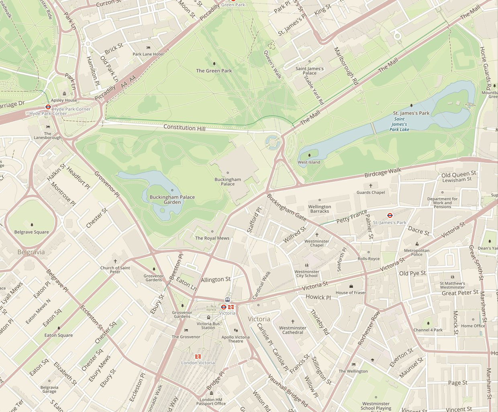

OSM is not just a map...
OSM is not JUST a map...
... it's a database of geospatial data
but rather is a database of geospatial data, which you can query and retrieve data from.
Let's help Faith prepare for her fieldwork.
It's Friday night...
Thank you!